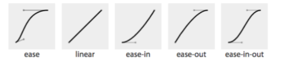
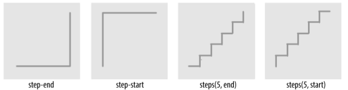

Dodaj obiekt: prostokąt. Po najechaniu myszką wykonaj animację przez 5s - obrót.
Dodaj obiekty: 3 prostokąty (jeden pod drugim) Po najechaniu na obiekt, nalezy powiększyć go o 100% (szerokość) i zmienić kolor.
Każdy obiekt w innym kolorze.
Dodaj 4 rozne obiekty. Dokonaj zmiany koloru po najechaniu myszka. Wykorzystaj rózne ustawienia transition-timing-function.
Wykonaj ikonke
Dobierz przejście.
Przejścia w CSS umożliwiają zmianę wartości własności CSS na drugą w ściśle określonym przedziale czasowym. Zmiana może przebiegać liniowo (płynnie, proporcjonalnie), zgodnie z zadaną krzywą oraz z dodatkowym opóźnieniem.
Standardowo zmiana właściwości występuje natychmiastowo po zaistnieniu style change event. Większość zmian propagowana jest w ok. 16ms (z wyjątkiem koloru tła, tutaj mamy widoczny problem z niską wydajnością).
CSS Transitions umożliwiają stworzenie płynnego ustawienia nowej wartości atrybutu.
button {
color: magenta;
transition: color 200ms ease-in 50ms;
}
button:hover {
color: rebeccapurple;
transition: color 200ms ease-out 50ms;
}
Przejście z koloru magenta na rebeccapurple trwa 200ms. Animacja opóźniona została o 50ms.
Konfiguracja przejścia następuje przy wykorzystaniu:
Skrócona postać: transition
Wartość:
Gdy podamy tylko jedną wartość - zostanie zastosowana do wszystkich przejść. W przypadku gdy mamy więcej wartości niż animacji, są ignorowane. Gdy mniej - ostatnia jest kopiowana. Sprawdzcie sami! Gdy mamy dokladnie dwie wartosci, to naprzemiennie są podstawiane!
Lista oddzielona przecinkami

Skokowa funkcja:

steps(5, start) dzieli przedział czasu na 20% 40% 60% 80% 100%. steps(5, end) dzieli przedział czasu na 0% 20% 40% 60% 80%.
domyslnie 0s definiuje opoznienie wykonania akcji
zasada jest podobna jak transition-duration uwaga: możliwe są wartosci ujemne! sprawdz jak to działa